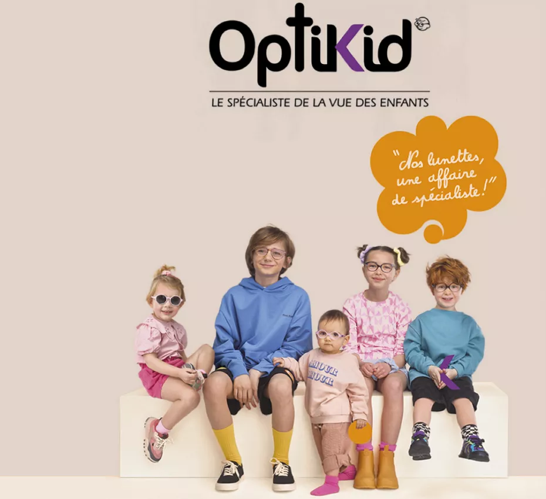
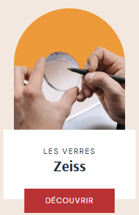
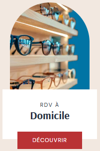
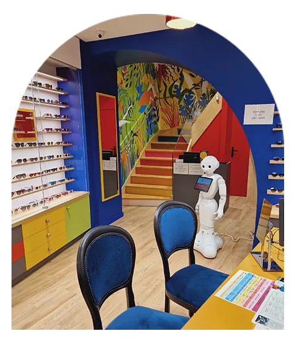

Opticien certifié Optikid
Une expe rtise reconnue dans le choix et l'ajustement des lunettes pour enfant et adolescent.




Une expe rtise reconnue dans le choix et l'ajustement des lunettes pour enfant et adolescent.



Depuis 1950, Charmard Opticiens met son savoir-faire de l'optique au service de votre
vision. Installée en plein coeur de l'Arbresle, notre entreprise familiale est bien plus
qu'un simple opticien.
Vous y êtes accueillis par une équipe aussi passionnée que qualifiée.
Entièrement à votre écoute, nous vous conseillons dans une ambiance conviviale et
colorée.
Vous choisissez vos nouvelles lunettes ou lentilles dans la bonne humeur !

Pour garantir votre satisfaction, nous mettons à votre disposition un savoir-faireglobal de l'optique.